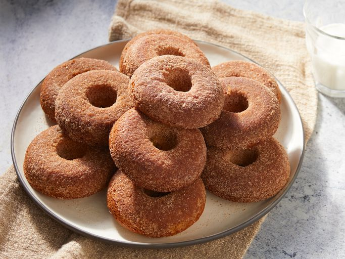

Apple Cider Donuts

Baked, Delicious Goodness
Baked apple cider donuts are a cozy, autumn-inspired treat made by infusing a soft, cake-like dough with reduced apple cider for a concentrated flavor. These donuts are baked, not fried, making them lighter and easier to prepare. Once baked, they are often coated in cinnamon sugar, adding a sweet and slightly spiced crunch. With their moist texture and warm apple flavor, these donuts are a seasonal favorite, perfect for pairing with coffee, tea, or a mug of warm cider.
Ingredients
- 2 cups fresh apple cider
- 2 cups all-purpose flour
- 3/4 tsp baking powder
- 3/4 tsp baking soda
- 1/4 tsp fine salt
- 1 tsp ground cinnamon
- 1 pinch ground cardamom
- 1 pinch fresh grated nutmeg
- 1/2 cup white sugar
- 1/2 cup packed brown sugar
- 6 tbsp unsalted butter, melted, divided
- 3/4 tsp vanilla extract
- 1 large egg
Steps
- Preheat the oven to 375 degrees F (190 degrees C). Butter two 6-cup donut pans.
- Pour apple cider into a saucepan and place over medium heat. Bring to a simmer and let it cook, watching carefully, until the cider is reduced to 1/2 cup. If it reduces too much, add enough water to make 1/2 cup. Set aside until needed.
>
- Add flour, baking powder, baking soda, salt, 1 teaspoon cinnamon, cardamom, and nutmeg to a large bowl. Mix with a whisk until combined and set aside until needed.
- Whisk 1/2 cup white sugar, brown sugar, milk, 2 tablespoons melted butter, vanilla extract, and egg together in another bowl until combined. Add the apple cider reduction and the dry ingredients. Whisk together to form a slightly thick batter; do not overmix.
- Spoon or pipe the batter into the prepared donut pans, filling them about 3/4 of the way up.
- Bake in the center of the preheated oven until the tops are lightly browned, and the donuts spring back slightly to the touch, 10 to 12 minutes. Let cool for 10 minutes in the pans before removing to a sheet pan lined with a silicone baking mat. Cut out any donut holes as necessary.
- If desired, while still slightly warm, brush the donuts lightly with remaining melted butter.
- To make the coating: Mix 1 cup white sugar and 1 tablespoon cinnamon together in a shallow dish; toss donuts in sugar mixture to coat. Let cool completely before serving.
Back to Recipes Index